Algumas novidades do Java 8 (e versões superiores)
Java 8+: Transformando a Programação com Expressões Lambda e java.time.

Desenvolvedor Java Sênior na Develcode
14 de julho de 2024
Embarque conosco nesta jornada fascinante pelo universo do Java 8, uma versão que marcou um antes e um depois na história desta linguagem de programação. Vamos explorar as revolucionárias Expressões Lambda e a API de Streams, que transformaram a forma como lidamos com coleções de dados, tornando o código mais eficiente e legível. Além disso, mergulharemos no pacote java.time, uma poderosa ferramenta que trouxe uma nova era para a manipulação de datas e horas, proporcionando robustez e eficiência. Prepare-se para descobrir como o Java 8 e suas versões superiores podem otimizar seu código e elevar suas habilidades de programação a um novo patamar.
Expressões Lambda e Streams API: Introdução de expressões lambda e a API de Streams, que revolucionaram o processamento de coleções de dados.
No Java 8, as expressões lambda foram introduzidas como uma maneira concisa de representar funções anônimas.
Elas permitem que você escreva blocos de código de forma mais compacta e expressiva, especialmente quando se trata de operações em coleções de dados.
Por exemplo, você pode usar expressões lambda para filtrar, mapear ou reduzir elementos em uma lista.
Já a API de Streams oferece uma abstração de alto nível para processamento de coleções, permitindo operações como filtragem, mapeamento, ordenação e agregação de dados.
Ela é baseada em sequências de operações, o que torna o código mais legível e eficiente.
Em resumo, essas duas adições revolucionaram a forma como lidamos com coleções de dados no Java.
Para usar expressões lambda em Java, siga estas etapas:
1. Sintaxe:
- Uma expressão lambda é definida usando o operador ->.
- Ela consiste em parâmetros (se houver) e um corpo.
- Exemplo: (x, y) -> x + y
2. Interfaces Funcionais:
- As expressões lambda são usadas principalmente com interfaces funcionais.
- Uma interface funcional tem apenas um método abstrato.
- Exemplos: Runnable, Consumer, Predicate.
3. Exemplos:
- Runnable:
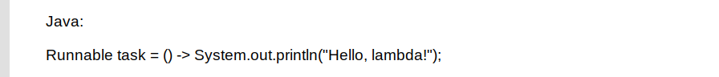
Exemplo de código Java aplicando o Lambda.
- Consumer (recebe um argumento, não retorna valor):
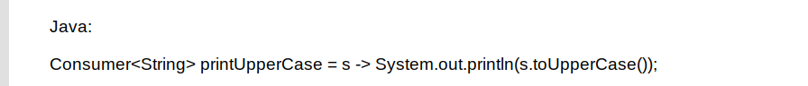
Exemplo de código Java aplicando o Lambda.
- Predicate (avalia uma condição):
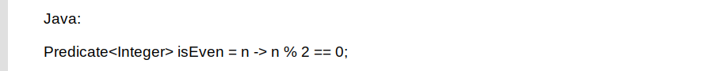
Exemplo de código Java aplicando o Lambda.
4. Benefícios:
- Concisão: Reduz a quantidade de código.
- Legibilidade: Expressa a intenção de forma clara.
Lembre-se de que as expressões lambda são poderosas e flexíveis.
- Quais são os principais métodos da API de Streams?
A API de Streams no Java oferece uma variedade de métodos para processar sequências de elementos. Alguns dos principais métodos incluem:
- reduce(): Combina os elementos de um stream em um único resultado, aplicando uma operação associativa. Por exemplo, calcular a soma ou o produto dos elementos.
- max() e min(): Encontram o maior e o menor elemento do stream, com base em um critério de comparação.
- forEach(): Executa uma ação para cada elemento do stream. Útil para realizar operações em cada item sem retornar um novo stream.
- findFirst() e findAny(): Encontram o primeiro elemento do stream. findFirst() retorna o primeiro elemento encontrado, enquanto findAny() retorna qualquer elemento.
- count(): Retorna o número de elementos no stream.
- collect(): Agrupa os elementos do stream em uma coleção ou em outro tipo de resultado, como uma lista, conjunto ou mapa.
Esses métodos são apenas alguns exemplos. A API de Streams oferece muitas outras operações intermediárias e terminais para manipular dados de forma eficiente e declarativa.
Alguns exemplos práticos:
Vamos considerar um exemplo usando a API de Streams para processar uma lista de números inteiros. Suponha que temos a seguinte lista:
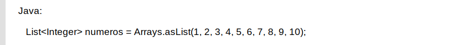
Exemplo de código Java aplicando a API de Streams.
Aqui estão alguns exemplos de operações que podemos realizar:
1. Filtrar números pares:
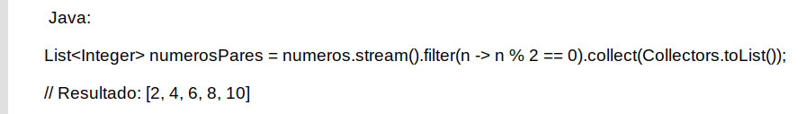
Exemplo de código Java com a API de Streams aplicando filtro.
2. Calcular a soma dos números:
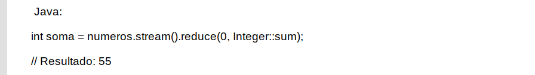
Exemplo de código Java com a API de Streams utilizando cálculo.
3. Encontrar o maior número:
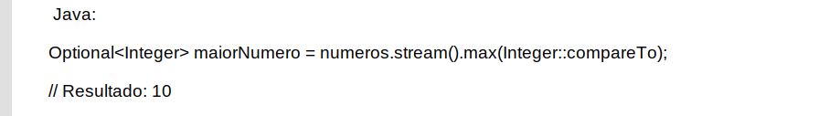
Exemplo de código Java com a API de Streams utilizando fórmula.
4. Verificar se há algum número maior que 5:
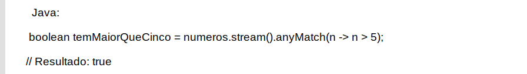
Exemplo de código Java com a API de Streams utilizando regra de negócio.
Esses são apenas alguns exemplos básicos. A API de Streams oferece muitas outras possibilidades para manipular e processar dados de forma elegante e eficiente.
Quais são os benefícios de usar Streams em Java?
As streams em Java oferecem uma abordagem elegante e funcional para o processamento de dados em coleções. Aqui estão alguns benefícios:
1. Concisão e Legibilidade:
- As streams permitem escrever código mais conciso e legível.
- Expressões lambda e métodos como filter, map e reduce simplificam o código.
2. Eficiência:
- Streams podem ser paralelizadas, aproveitando o poder de processamento multi-core do sistema operacional.
- Operações intermediárias são avaliadas sob demanda, economizando recursos.
3. Composição de Operações:
- Você pode encadear várias operações em uma única expressão.
- Isso facilita a criação de sequência de processamento de dados.
4. Não Destrutividade:
- Streams não modificam a coleção original.
- Os resultados são obtidos em novas streams ou coleções.
As streams tornam o processamento de dados mais expressivo e eficiente.
Quais são os principais métodos da API de Streams em Java 8+?
A API de Streams do Java 8 introduziu uma série de métodos poderosos para processamento de dados. Aqui estão alguns dos principais métodos:
- filter(Predicate predicate): Retorna um stream que inclui elementos que correspondem ao predicado fornecido.
- map(Function mapper): Transforma os elementos usando a função fornecida.
- flatMap(Function mapper): Transforma cada elemento em um stream e então "achata" todos os streams em um único stream.
- limit(long maxSize): Limita o stream ao número de elementos fornecido.
- collect(Collector collector): Reduz o stream a um tipo de coleção usando o coletor fornecido.
- forEach(Consumer action): Aplica uma ação a cada elemento do stream.
- reduce(BinaryOperator accumulator): Reduz o stream a um único valor usando o operador fornecido.
- sorted(): Retorna um stream com os elementos ordenados.
- anyMatch(), allMatch(), noneMatch(): Retorna um booleano indicando se algum, todos ou nenhum dos elementos correspondem ao predicado fornecido, respectivamente.
- findFirst(), findAny(): Retorna um Optional que contém o primeiro ou qualquer elemento do stream, respectivamente.
Esses métodos podem ser encadeados para realizar operações complexas de processamento de dados de maneira eficiente e legível.
Lembre-se de que os streams são projetados para trabalhar com Expressões Lambda em Java, tornando o código ainda mais conciso.
Aqui está um exemplo prático de como você pode usar a API de Streams do Java 8.
Vamos supor que temos uma lista de nomes e queremos encontrar os nomes que começam com a letra "A" e imprimi-los:
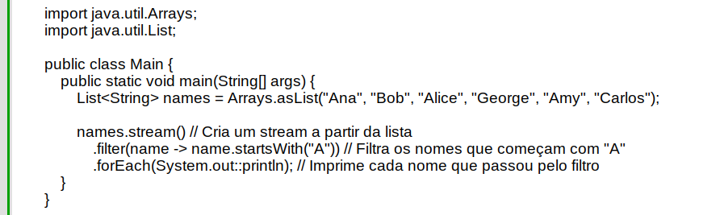
Exemplo de código Java para utilizar a API de Streams do Java 8.
Quando você executa este código, ele imprimirá:
Resultado do código Java acima.
Este é um exemplo simples, mas a API de Streams é muito poderosa e pode ser usada para operações de processamento de dados muito mais complexas.
Java.time: Novo pacote para manipulação de datas e horas de forma mais eficiente e robusta:
O pacote java.time introduzido no Java 8 oferece uma abordagem abrangente e eficiente para a manipulação de datas e horas. Ele resolve muitos dos problemas existentes nas antigas classes Date e Calendar, fornecendo uma API mais intuitiva e robusta. Com classes imutáveis e métodos fluentes, ele simplifica tarefas como formatação, análise, cálculo de duração e manipulação de fusos horários. Além disso, é totalmente compatível com o padrão ISO-8601, o que facilita a interoperabilidade com outras tecnologias e padrões.
Quais são as principais classes do pacote java.time?
O pacote java.time do Java 8+ inclui várias classes importantes para a manipulação de datas e horas. Aqui estão algumas das principais:
- LocalDate: Representa uma data sem horário e fuso horário. É útil para representar datas de aniversário ou datas de calendário.
- LocalTime: Representa um horário sem data e fuso horário. É útil para representar horários do dia.
- LocalDateTime: Representa uma data e hora sem fuso horário. É útil para representar carimbos de data/hora em um contexto específico.
- ZonedDateTime: Representa uma data e hora com um fuso horário. É útil para lidar com situações em que o fuso horário é importante, como em um aplicativo de calendário.
- Period: Representa uma quantidade de tempo em termos de anos, meses e dias. É útil para calcular diferenças entre datas.
- Duration: Representa uma quantidade de tempo em termos de segundos e nanossegundos. É útil para calcular diferenças de tempo de alta precisão.
- Instant: Representa um ponto específico na linha do tempo. É útil para registrar eventos de log ou marcar carimbos de data/hora.
- ZoneId: Representa um identificador de fuso horário. É útil para converter entre fusos horários.
- DateTimeFormatter: Fornece a capacidade de formatar e analisar datas e horas.
Essas classes fornecem uma API abrangente para lidar com datas, horas e fusos horários de maneira eficiente e intuitiva.
Aqui está um exemplo simples de como você pode usar a classe LocalDate do pacote java.time:
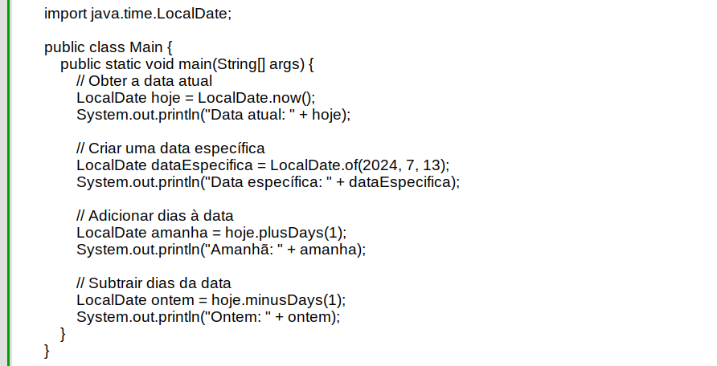
Exemplo de código Java com aplicação da biblioteca Local.Date.
Quando você executa este código, ele imprimirá a data atual, uma data específica, a data de amanhã e a data de ontem.
A classe LocalDate fornece muitos outros métodos úteis para manipular datas de maneira eficiente e intuitiva.
Aqui está um exemplo simples de como você pode usar a classe LocalTime do pacote java.time:
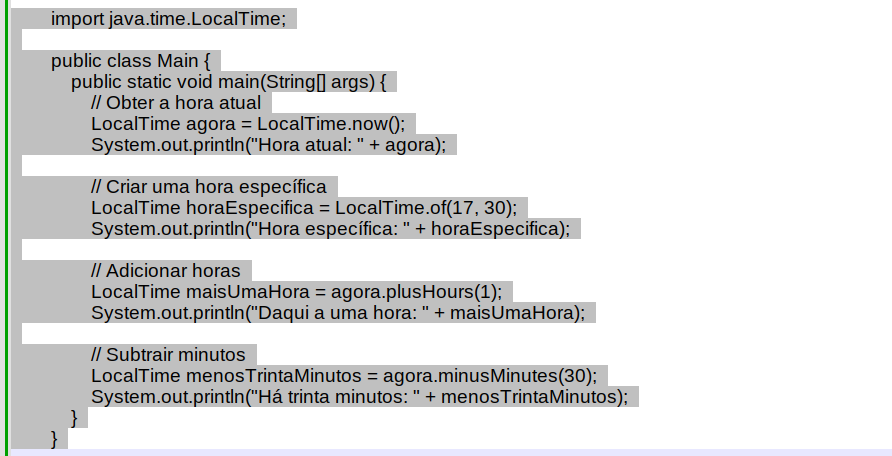
Exemplo de código Java com aplicação da biblioteca Local.Time.
Quando você executa este código, ele imprimirá a hora atual, uma hora específica, a hora de uma hora a partir de agora e a hora de trinta minutos atrás.
A classe LocalTime fornece muitos outros métodos úteis para manipular horas de maneira eficiente e intuitiva.
Como posso converter uma hora para o formato ISO-8601 usando java.time?
Você pode usar a classe LocalTime do pacote java.time para converter uma hora para o formato ISO-8601. Aqui está um exemplo:
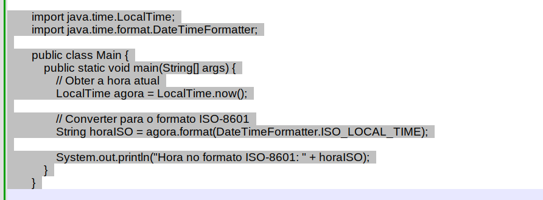
Exemplo de código Java com aplicação da biblioteca Local.Time no formato (ISO-8601)
Quando você executa este código, ele imprimirá a hora atual no formato ISO-8601 (por exemplo, "13:45:30.123").
A classe DateTimeFormatter fornece vários formatadores predefinidos, incluindo ISO_LOCAL_TIME para o formato de hora ISO-8601.
Você também pode criar seu próprio formatador usando o método DateTimeFormatter.ofPattern(String pattern).
Por exemplo, DateTimeFormatter.ofPattern("HH:mm:ss") criará um formatador que formata a hora como "13:45:30".
Concluímos nossa jornada explorando as maravilhas do Java 8, uma versão que trouxe inovações significativas e mudou a forma como programamos. As Expressões Lambda e a API de Streams abriram novos horizontes para o processamento de dados, enquanto o pacote java.time revolucionou a manipulação de datas e horas. Esperamos que este artigo tenha lhe proporcionado uma visão valiosa e inspiradora das possibilidades que o Java 8 e versões superiores oferecem. Continue explorando, aprendendo e inovando, pois o mundo da programação está sempre evoluindo e há sempre algo novo para descobrir.